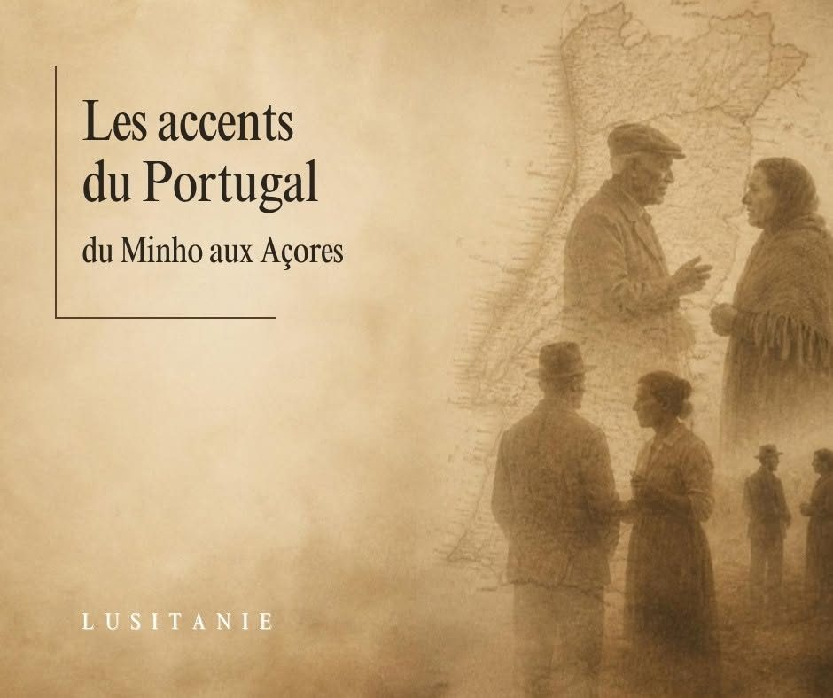

Accents du Portugal : du Minho aux Açores, ce qui distingue les parlers régionaux
Le Portugal est petit par sa superficie, mais sa langue ne sonne pas de la même façon à Viana do Castelo et à Faro, à Lisbonne et à Ponta Delgada.

Depuis les travaux de Luís Filipe Lindley Cintra, les linguistes distinguent sur le continent deux grands ensembles, les parlers du Nord et ceux du Centre-Sud, auxquels s'ajoutent les variétés de Madère et des Açores. Les limites entre ces ensembles ne sont pas des frontières nettes : les traits se recouvrent et s'estompent progressivement d'une région à l'autre.
Le Nord : le b, le v et le « tch »
Dans le Minho, à Porto ou dans le Trás-os-Montes, le trait le plus connu est la confusion entre b et v : on y entend « binho » pour vinho. Le Nord conserve aussi des sons que le reste du pays a perdus. Dans une partie du Minho et du Trás-os-Montes, le ch se prononce encore « tch », comme en portugais médiéval : chave devient « tchave ». La diphtongue de ouro reste audible, là où Lisbonne dit « ôro ». Le s, enfin, y est prononcé avec la pointe de la langue, ce qui lui donne un léger chuintement, héritage d'une distinction médiévale entre plusieurs types de s.
Le Centre : la référence et ses particularités
L'axe Coimbra-Lisbonne a servi de base au portugais standard, celui de la radio et de la télévision. Comme presque partout au Portugal, et contrairement au Brésil, les voyelles non accentuées y sont fortement réduites, au point de disparaître parfois : d'où l'impression, pour une oreille étrangère, d'une langue faite de consonnes et de chuintements. Lisbonne a pourtant ses propres marques : la diphtongue ei s'y prononce « âi » (peixe devient « pâixe », leite « lâite »), et le nom même de la ville se réduit souvent à quelque chose comme « L'jboa ».
Le Sud : un rythme plus lent
Au sud du Tage, l'Alentejo est connu pour son débit posé et sa cadence traînante. Deux traits le distinguent : l'ajout d'un i en fin de mot (comer devient « comêri », amor « amori ») et l'usage courant du gérondif, estou cantando plutôt que estou a cantar, construction qui rapproche ici le portugais européen de celui du Brésil. Ce gérondif se retrouve en Algarve, où, dans la partie occidentale, le Barlavento, le u se prononce parfois comme en français.
Les îles : les accents les plus singuliers
Madère et les Açores ont les parlers les plus déroutants pour un Portugais du continent. À São Miguel, le u sonne comme le u français et les voyelles sont fortement transformées. On attribue parfois ce trait à des colons français, mais l'hypothèse n'est pas établie : l'île a surtout été peuplée depuis l'Alentejo et l'Algarve, où l'on observe le même phénomène. À Madère, les voyelles accentuées tendent à se diphtonguer et le l placé après un i se mouille : vila se prononce presque « vilha ».
Malgré l'uniformisation portée par l'école et les médias, ces accents restent bien vivants. Quelques mots suffisent souvent à dire d'où vient celui qui parle.